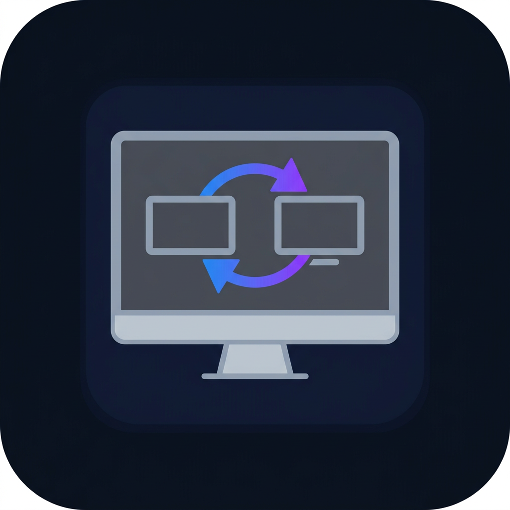

Подключения
Доступные RDP, RustDesk, SSH и SFTP узлы

Единый доступ к инфраструктуре: RDP, AnyDesk, RustDesk
Доступные RDP, RustDesk, SSH и SFTP узлы
Инструкции, регламенты и база знаний
Учётные записи сотрудников и администраторов
| Логин | ФИО | Роль | Статус | Создана | Действия |
|---|
Ваша учётная запись и смена пароля
| Имя | Размер | Изменён |
|---|
| Имя | Размер | Изменён |
|---|